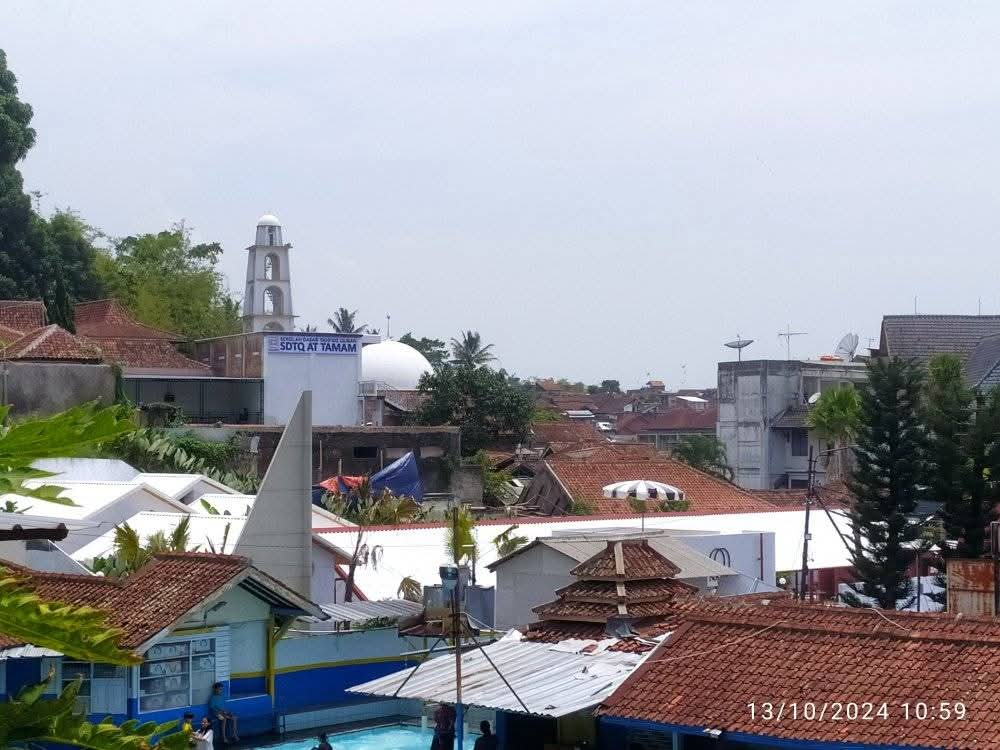

"Di Attamam, anak-anak diajarin wudhu yang benar, cara menjawab salam, adab ke guru, cara minta maaf, hingga cara duduk waktu belajar. Kalau iman dan adabnya kuat dari kecil, insyaAllah dia bisa bertahan dalam hidup."

SDTQ ATTAMAM menjaga rasio siswa per kelas tetap kondusif. Setiap guru mengenal nama, karakter, dan perkembangan hafalan serta adab santri secara mendalam dan sabar.
Sekolah Dasar Tahfidz Qur’an (SDTQ) ATTAMAM berada di bawah naungan Yayasan ATTAMAM, hadir dengan konsep Full Day School yang berafiliasi kepada Dinas Pendidikan. Kurikulum menekankan pada tahfidz Qur’an, dipadukan dengan al-‘ulumul Fardhu ‘Ain (Pendidikan Agama Islam) dan al-‘ulumul Fardhu Kifayah (Mata pelajaran umum).
Pendaftaran Angkatan Ke-2 Sekolah Dasar Tahfidz Qur'an ATTAMAM